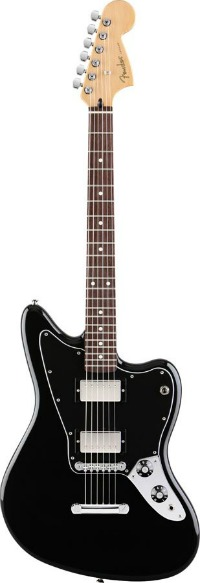
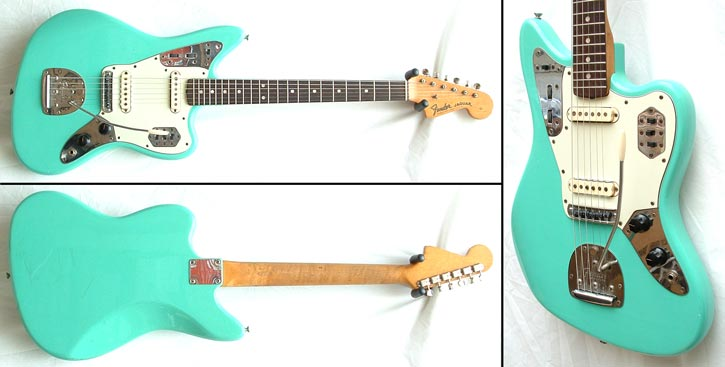

Fender Jaguar®
Drive your sound with raw humbucking power. Fender’s new and innovative Blacktop™ guitar series expands the sonic horizon of classic Fender Stratocaster®, Telecaster®, Jazzmaster® and Jaguar® guitars by powering them with high-gain humbucking pickups. The Blacktop series delivers on modern player demands for a thick and heavy sound with guitars that drive a wide array of deep, rich and aggressive tones that match the intensity of any playing style. Sleek and supercharged, the Blacktop Jaguar HH has dual over-wound alnico humbucking pickups, with other distinctive touches including skirted black amp knobs, a slinky 24” scale, Adjusto-Matic™ bridge with stop tailpiece and a lean control layout featuring a tonally convenient single three-way toggle switch. Other features include an alder body, maple neck with 9.5”-radius rosewood fretboard, 22 medium jumbo frets, gloss polyester finish and chrome hardware.